In Kurt Vonnegut's Cat's Cradle, a crystal of ice-nine, a form of ice that melts at 45.8 °C, falls into the sea and the oceans freeze. This project models what would actually happen: how much of the ocean freezes, how fast, what stops it, and what happens to the air and the land.
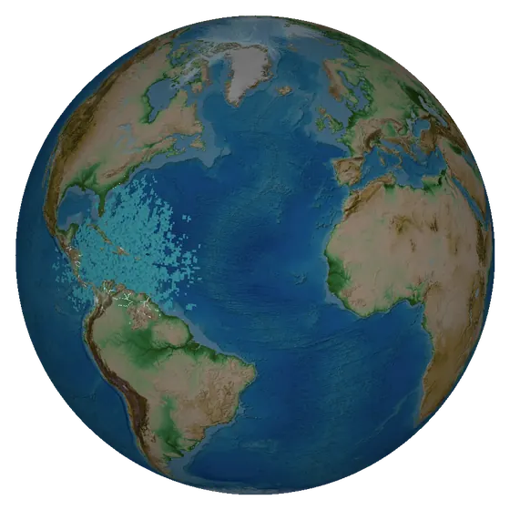
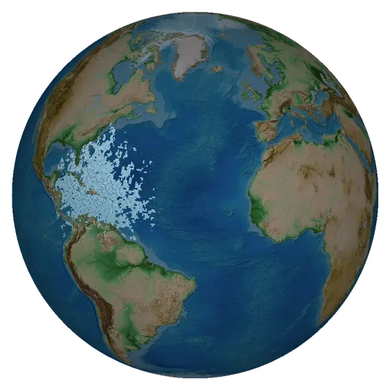
The novel does not say whether ice-nine is denser than water, and that decides the outcome. If the solid sinks, the ocean becomes a hot slush with open water on top. If it floats, a crust closes over the sea. Both runs start from a single seed in the Caribbean in October, on a 0.5° grid.
The ocean becomes slush from top to bottom and stays open at the surface.
A crust forms on the sea; brine from it overturns the water below.
From 25 scenarios run for twelve simulated years, each changing one assumption, plus convergence tests and an energy budget that closes to 0.03%.
Freezing releases latent heat into the water itself. A column freezes until it reaches its melting point, then only as fast as heat leaves the planet. The stall level is set by the latent heat and does not depend on grid, time step or front speed. Rain seeding gets it there within a week.
After the first weeks the freeze advances only as fast as the atmosphere sheds heat to space. At that rate the rest of the ocean would take more than a century.
Sea spray carries crystals into the air, and rain that forms around them falls as ice-nine. Fresh ice-nine melts 2.2 K above the brine-depressed sea slush, so it survives in a very hot world. How far it reaches is uncertain: across 54 combinations of crystal and rain assumptions, land cover after a year ranged from 16% to 94%.
A sinking solid leaves an open slush ocean near 42 °C for decades. A floating solid closes a crust in about six years and the planet becomes a snowball.
Polar water starts near −1 °C and is lifted to the melting point by its own latent heat; tropical water starts near 27 °C. The air follows the sea.
And it takes years. Known high-pressure ice phases are denser than water, which favours the sinking case.
One seed in the Caribbean. The lattice spreads by contact at about 15 km/h, rides the currents, and is carried by the wind: sea spray lofts crystals, and rain that forms around them seeds the sea, the lakes and the rivers it falls on, and whitens the land. Within a week almost the whole ocean is seeded and the freeze stalls, held back by its own heat; by day 10 the land is white. One frame per day, from runs with 2-hour steps.
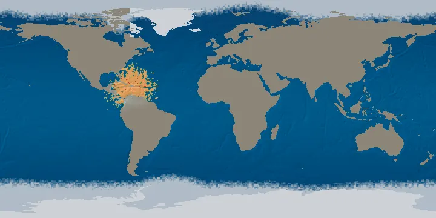
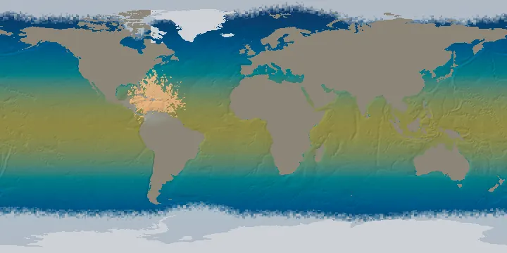
Renders from the model, flat and on the globe over the natural-colour relief. Water is coloured by temperature: navy cold, amber near the melting point, red above it. Blue-white is ice-nine, at sea or as snow on land.
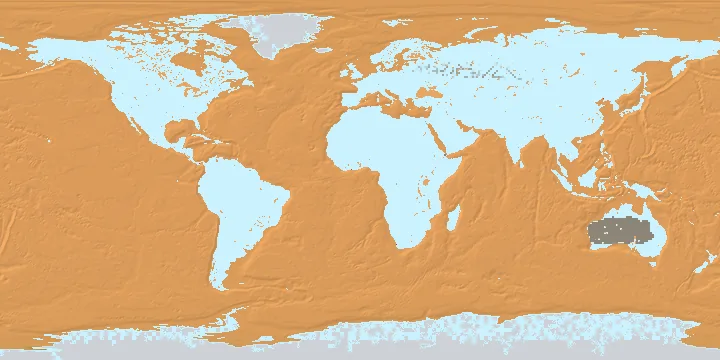
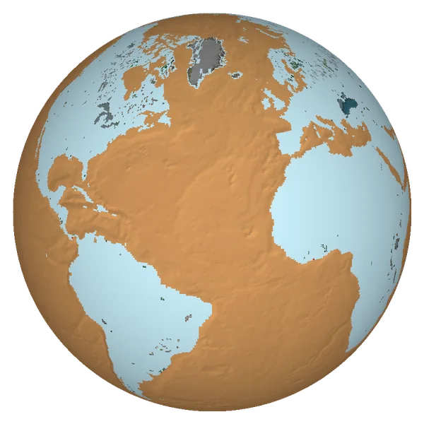
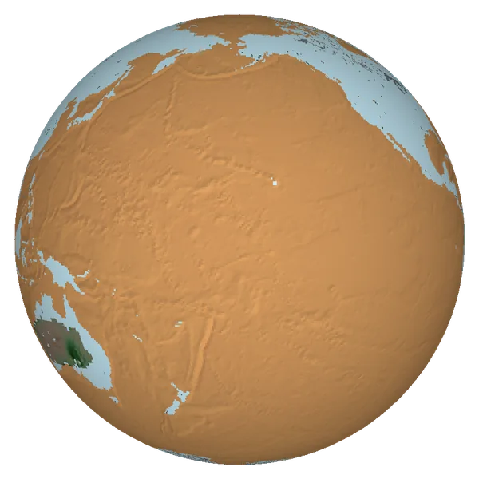
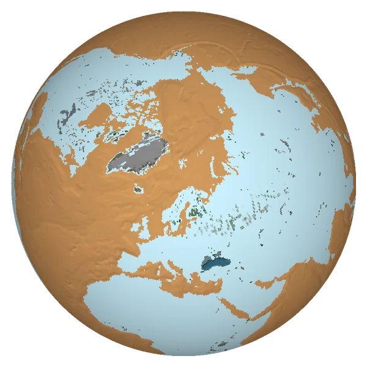
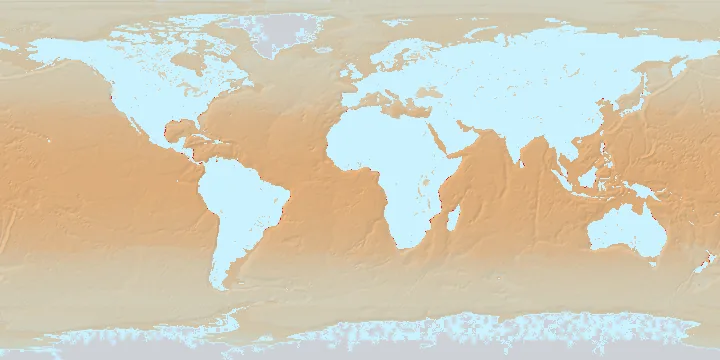
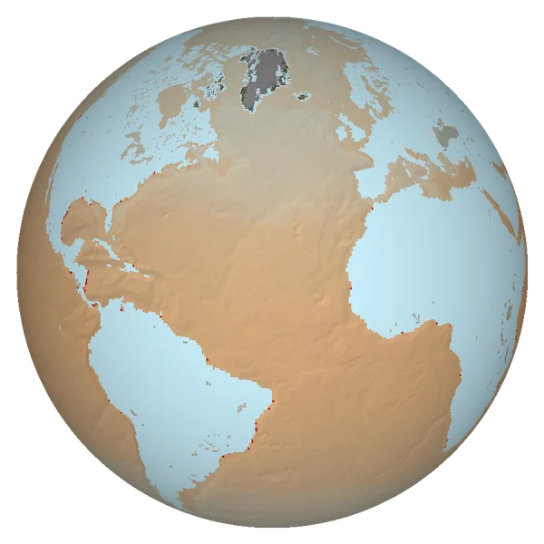
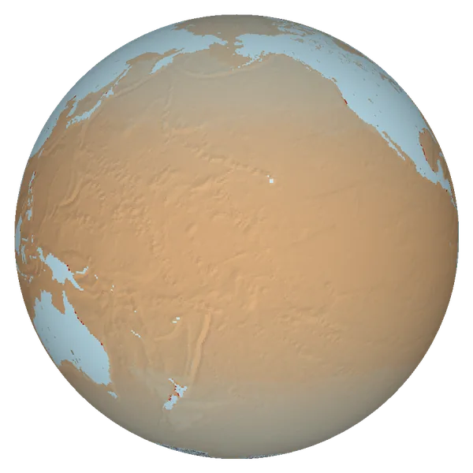
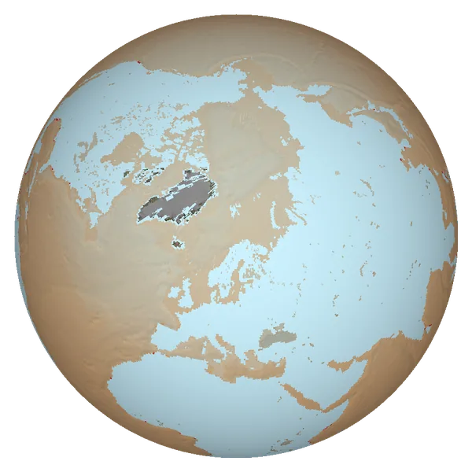
A global grid of ocean columns with a one-degree atmosphere above it, run in the browser. Every physical constant has a written derivation; the few that are estimates are marked as such.
Each column has a temperature and a solid fraction. A seeded column freezes while it is below its melting point. Freezing releases latent heat into the column (389 kJ/kg, from the entropy of fusion of known ices), and the melting point falls as the remaining brine gets saltier. A sinking solid turns the whole column to slush; a floating one forms a crust over a 100 m mixed layer, and brine from the crust overturns the water below.
A seeded column seeds its neighbours at about 15 km/h. Currents carry crystals downstream, and rain falling through crystal-laden air seeds the sea, lakes and rivers it lands on.
The sea exchanges heat with the air by standard bulk formulas. The air has today's seasonal climate, moves at realistic wind and mixing speeds, and radiates to space with a water-vapour greenhouse and clouds. White surfaces (crust, frozen columns, snow) reflect sunlight in proportion to the sunshine they receive. Moist convection keeps the air within a few degrees of the sea.
Evaporation feeds a vapour field that rains out over about nine days, on top of today's rainfall map. The latent heat travels with the vapour. Rain that forms around ice-nine crystals lands as snow, which melts only where the air or sunlit ground passes 45.8 °C.
| Result | Confidence | Why |
|---|---|---|
| The ocean stalls near 39% within a week or two | high | The level follows from energy conservation and is identical across grids, time steps and seeds. The timing depends on the time step: day 7 at 2 h steps, day 20 at 48 h. |
| Slow freezing afterwards, decades to centuries to finish | moderate | Rate set by radiation to space; the atmosphere is a single layer with prescribed feedbacks. |
| Deposited ice-nine snow survives in a very hot world | moderate to high | Fresh ice-nine melts above the brine-depressed slush that sets the air temperature. |
| Nearly all land white within weeks | low to moderate | Depends on how long crystals stay in the air and on where the extra rain falls; deserts and continental interiors are the least certain. |
| A floating crust ends in a snowball | moderate | Robust in direction; the timing shifts by about a year with grid and time step, and the end temperature depends on clouds and snow. |
Ocean circulation below the surface, cloud reflection in a much wetter world, changes in the global circulation of the atmosphere, salt precipitation, and the loss of ocean water to snow on land. The front speed, the seeding rates and the crystal lifetime in the air are estimates; the crystal lifetime has the largest effect on how much land whitens.
All scenarios, the convergence tests, the energy budget and the sensitivity of the snow results are in the paper.
The model runs in any modern browser with no installation: open the simulation, tap the sea to drop a seed, and press Start. The controls let you change every assumption discussed here, from whether ice-nine floats to how long crystals stay in the air.
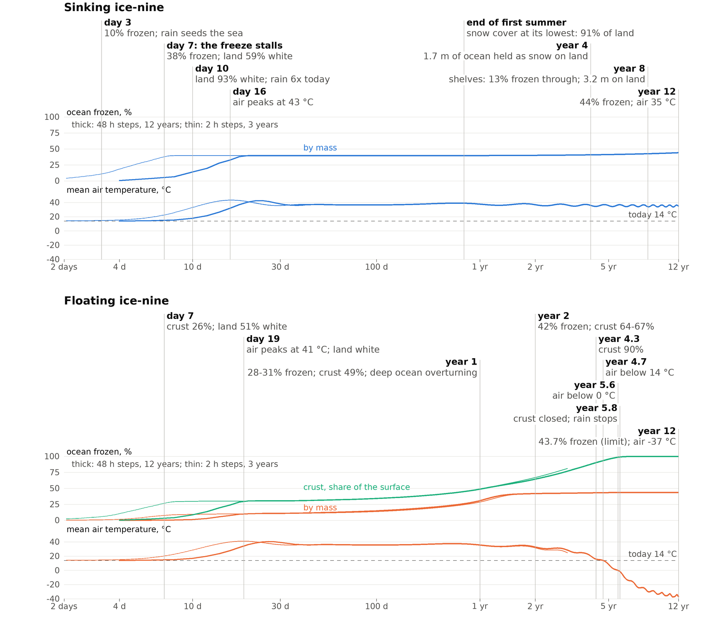